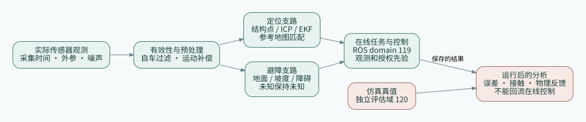
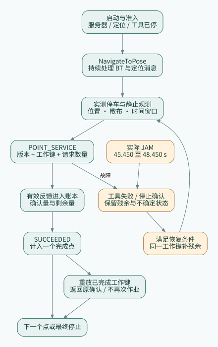
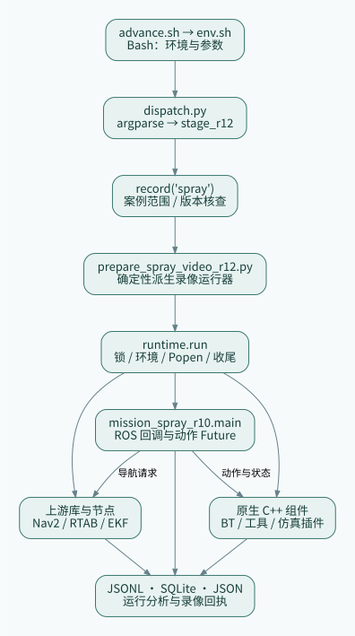

农田机器人项目学习教材
从第一次打开终端，到理解点喷、巡检、割草的观测、决策、控制和作业反馈。本仓库面向刚接触 Linux、ROS 2 和机器人项目的学习者。
当前交付包含 L01 和 L02 完整三十章教材。 进入三十章目录，或下载后打开根目录 index.html 并点击 L02。完整学习网站与发布验收属于 L03。机器人项目的 R10–R12 仍为 PARTIAL；学习资料的完成状态独立记录。L01 文件保留为当时的设计与检查记录。
L02 提供逐章原理、56 段固定生产源码解读、三十个 Python 离线练习、真实 C++ 判据调用、Linux 命令、环境搭建、三任务操作卡和故障分析。阅读入口：学习路线 · 三点闭环 · 环境搭建 · 人工操作 · 检查结果。
从这里开始
- Windows：在 GitHub 直接阅读章节；也可用仓库的 Code → Download ZIP 下载，解压后双击根目录
index.html，进入 L02 三十章阅读版，不需要安装 ROS 或 Python。使用期间保留 L01、L02、assets、baseline、evidence 等相邻目录。完整网站搜索等功能留到 L03。
- Linux：阅读同一份资料；需要操作机器人时，进入原工程
/home/ceihao/robot_project。本学习仓库不是机器人的可运行替代目录。
- 离线练习：只分析随教材附带的真实结果文件，不启动仿真。见样章和练习代码。
资料来源与复核方法说明固定版本、标准库资料和检查范围。
机器人源码固定于 ROS2_BT- 的 9aff8337 提交。附带源码摘录、机器可读哈希清单与精选证据，方便在 Windows 上对照阅读。详细 provenance 见 baseline/manifest.json。
怎样理解这里的状态
PASS 表示对应范围的检查通过；PARTIAL 表示有内容完成但必要项不足；HISTORICAL 表示历史版本结果；PLANNED 表示教材或功能尚未交付；PENDING_USER 表示需要用户亲自检查的体验。视频文件可播放、任务安全停车、完成全部作业，是三个不同结论。
所有本轮教材日期采用北京时间。原证据保留其 UTC 时间或仿真时间，不改写原始记录。原代码版权与第三方说明保持原有归属，本仓库未推定或补授机器人项目的统一开源许可。
下一步提示词：执行 L03：基于 L02 三十章内容制作完整在线与离线学习站，完善导航、搜索、代码阅读、素材和发布验收；保留固定学习基线与真实验收状态，同步 self_learning。
学习基线与事实边界
本教材解释的是一套已经有真实仿真、源码和结果记录的农田机器人系统。阅读时最重要的习惯是同时看三个对象：代码版本、运行输入、对应结果。一个阶段曾经通过，不能保证后来修改的版本也通过。
固定版本
| 对象 |
本次采用的值 |
| 机器人仓库 |
caihao1B/ROS2_BT- |
| 固定提交 |
9aff8337b7794f704c5556a973a5220e73f17808 |
| Git 树 |
0e71e12fbf3bfa67295abd9cec071c6edc9bd531 |
| 当前运行工程 |
/home/ceihao/robot_project |
| 学习资料目录 |
/home/ceihao/self_learning |
| 查验范围 |
固定提交下的 821 个 optimization_v2/ws/src 文件与本机字节比对 |
| 本轮方法 |
读取代码、冻结资料、核查已有回执、运行小型离线教学例；没有重跑机器人仿真 |
Git 提交可以理解为“指向一组固定文件的版本标识”。分支 main 会变化，所以教材中的外部源码链接使用完整提交号。SHA-256 用于发现文件变化；它不证明算法正确。教材的 manifest 同时保留 Git blob 标识、SHA-256、文件用途和源码链接。
一个早期 S 阶段总计划文件在本机与公开提交之间存在字节差异。教材采用固定提交里的版本并记录差异，不修改原工程。历史文档的写法与当前实现不一致时，当前代码及其绑定结果具有更直接的解释力。
当前能够确认的范围
| 能力或阶段 |
事实 |
阅读边界 |
| R08 巡检 |
保存的阶段回执 PASS，当前文件校验另见检查结果 |
包含本阶段绑定的巡检、跟随、停车恢复等案例 |
| R09 割草组件 |
保存的阶段回执 PASS |
组件资格不能替代完整 B1 |
| 三点点喷录像 |
选中 3 点、完成 3 点；真实 JAM、重试和幂等重放通过 |
A1 原目标仍为 56 点 |
| 五段割草启动故障录像 |
选中 5 段、完成 5 段；取消与停止恢复通过 |
安全执行计划总计 47 段 |
| 完整 A1 |
完成 28/56 点，定位重验证达到上限 |
完整任务仍未通过 |
| 完整安全版 B1 |
完成 19/47 段，等待超时后人工处理 |
原参考 34 段及其 PARTIAL 记录保留 |
| R10、R11、R12 |
PARTIAL |
外观和录像组件存在，上游完整任务条件仍不足 |
| 原 S17、S18 |
PARTIAL |
未补齐六簇正式矩阵，不能从小规模录像推定完成 |
| 实时 GUI |
14 项单元检查、21 项浏览器检查的记录通过 |
用户人工体验另列，界面不授予任务 PASS |
主要结果可对照三点回执、A1 摘录、B1 摘录。阶段完整性检查的本次输出保存在 stage_checks.json。
三个容易混淆的概念
SLAM、局部里程计和全局重定位。 SLAM 同时估计运动并构建地图；局部里程计强调连续的短时运动；全局定位需要把当前观测对齐到已有地图。当前三任务链路使用 RTAB 原生局部 ICP 里程计、轮速/IMU 融合，以及冻结观测点云的区域匹配和 GNSS 监督。跨车高的旧 RTAB 数据库原生全局重定位存在失败记录，不能写成全面解决。定位变更说明
实验完成与模型值得启用。 历史 S15 完成了预测候选的对照，但当时默认选择 no_prediction。S16 记录缓存净收益与命中证据不足，默认关闭。这里的实验 PASS 说明按当时范围完成检查，不表示候选模型优于基线；当前巡检跟随还使用几何跟踪与路径关系，不能简单归因于学习型预测器。预测实验、缓存实验
模拟反馈与真实农业效果。 工具动作来自仿真执行器及反馈，账本按有效数据确认剂量或面积。它适合验证接口、取消和幂等性；喷洒机械臂、真实药液沉积、真实刀具切割效果仍是后续独立项目。
摄像头有实际仿真图像和 GUI 预览，但“图像可显示”本身不证明视觉语义识别通过。讲解某个任务的避障时，应查看它实际接入的几何、跟踪或识别支路，不能因为系统里有摄像头就推定所有决策使用了图像分类。
阅读证据的五个问题
先问“这是什么版本”，再问“选择了多少任务”，然后查“实际完成了多少”“靠什么反馈确认”“失败后是否安全停止”。这五个问题比只看一行 PASS 更能说明系统做到了什么。
公开 Git 仓库含源码、配置与精选资料；冻结的 map.db、已安装依赖和完整运行资源还在原 Linux 电脑。教材可以在 Windows 阅读，直接下载学习仓库不会获得完整仿真运行环境。资源边界详见环境说明。
需求演变与设计理由
项目从农田机器人仿真出发，逐渐形成三种作业、共用环境和感知定位基础、独立任务与反馈核算的结构。理解这条路线，比记住目录中的 S 编号和 R 编号更重要。
原始问题与迁移
用户最初在 Windows 虚拟机中的 Ubuntu 24.04 上完成项目，随后改用双系统里的原生 Linux，主要动机是运行速度和图形算力约束。这是用户提供的立项背景，不是本教材测得的虚拟机性能基准。
迁移首先要解决“原项目依赖什么”：模型、世界、插件、地图、Python 环境、编译产物和绝对路径都可能来自不同目录。单纯复制源码不会搬走系统依赖；删除旧目录前必须检查引用。当前活跃工程集中在主文件夹，旧入口与后来隔离的 optimization_v2 工作区分别保留。
这段经历形成第一条设计原则：运行基线先闭合，再扩展算法。否则错误可能来自缺文件或加载了旧插件，调算法参数会掩盖问题。
从简单场景到可观测的复杂环境
最初的优化要求包含三维环境、低矮和高大障碍、移动目标，以及多传感器。随后需求进一步明确为两个连续、不规则工作区，中间由曲线道路连接；工作区由算法划分三个连通簇，避免事先画好三个互不相连的小场地来代替大地图问题。
复杂度的关键不是模型数量，而是哪些信息提前知道、哪些信息必须现场观测。永久边界、基础地形和部分固定障碍可成为规划先验；动态目标和当前通行情况需要实时感知。地图上一块空白不能自动变成已经观测到的自由空间。
设计依据在原 S 任务计划；当前几何实现与源码导航对应于世界、车辆、分簇及路径模块。30 分钟限制首先是单簇仿真时间预算，不能换算成整套正式测试只需 30 分钟现实时间。
两种作业为什么需要不同路径语义
点喷需要到达一系列目标、停车、执行动作并核对反馈，访问顺序与旅行商问题相关。条带割草需要连续通过作业区域，考虑幅宽、地头、转弯半径、倒车和工具启停。两者都叫覆盖，但“覆盖一个点”和“覆盖一块面积”的判定不同。
机械臂、VLA 和真实工具机构被保留为后续独立工作。当前用 ToolTask 动作表达作业请求、反馈、取消、停止与残余。这让导航系统能先验证完整接口，又不必假设尚未设计的机械结构已经存在。
由此形成第二条原则：任务完成量应来自有效反馈。经过目标、走过路径、发出了工具命令，都不足以独立产生作业信用。
S01 至 S18 建设的是能力链
| 阶段范围 |
要解决的问题 |
为什么按这个顺序 |
| S01–S04 |
环境、世界、底盘、带误差传感器 |
先让物理与观测来源可信 |
| S05–S08 |
局部估计、建图、冻结图定位、GNSS 监督 |
先区分局部连续性和全局一致性 |
| S09–S10 |
通行代价、工具接口与账本 |
定义可执行条件和可计量结果 |
| S11–S14 |
连通分簇、路径和工时、导航、任务闭环 |
把几何计划变成真实动作 |
| S15–S16 |
预测与缓存对照 |
用数据决定是否启用更复杂方案 |
| S17–S18 |
六簇正式验收、可复现交付 |
验证整条链路，而非累计组件 PASS |
这一表描述计划职责，具体实现和通过范围要查对应版本。后续的 R 系列没有取消原 S17/S18 的标准。
为什么后来拆成三个独立任务
长任务和完整矩阵需要很长现实时间。为了让演示、学习与故障定位更可控，项目改成点喷、巡检、割草分别运行，各自使用适合的车辆和任务语义，共用场景与基础处理链。点喷参考 Husky 尺寸、巡检参考 Jackal 尺寸、割草使用 Dino 的前阿克曼几何；名称表示尺寸与模型参考，不等于商品整机认证。
拆分可以缩短一次启动和专项验证的范围，也便于定位某个功能的失败；它不会自动减少“把全部工作和全部故障组合完整测试一遍”的总需求。R01–R12 计划
真实测试怎样推动设计修正
| 遇到的事实 |
调整 |
保留的边界 |
学习价值 |
| 换车后传感器高度和可见结构变化 |
独立外参、有效传感器版本、区域观测匹配 |
不继承旧车辆的全局重定位资格 |
硬件几何也是算法输入 |
| 阿克曼地头绕圈大、端点难到达 |
整车扫掠、曲率约束、分挡停车、末端接近段 |
不缩车、不让阿克曼原地旋转 |
路径必须服从运动学 |
| 原 B1 部分终点与超限坡面冲突 |
用户批准独立安全执行版本，保留原参考 |
面积分母、原路径和残余不变 |
修改问题定义必须显式留痕 |
| 微小精停动作达不到粗导航进展尺度 |
为验证后的短动作设置专用进展尺度 |
超时、碰撞、作业准入继续独立检查 |
监督器也有适用尺度 |
| 启动工具时收到取消、反馈到达顺序变化 |
持续处理 BT 指令，分开停止确认与反馈时钟 |
不能用取消请求代替物理停止 |
异步系统需要完整状态机 |
| 失败现场难以学习 |
增加只读实时 GUI，展示原因与证据 |
不引入第二个控制出口 |
可观测性是工程能力 |
当前仍在探索的部分
完整 A1 的后半程仍出现定位旋转跳变与再次锁存；完整 B1 停车重定位时出现 GNSS 创新拒绝及等待超时。已有记录缩小了排查范围，但不能把末次快照直接当成已证明根因。详见当前修复报告和问题分类。
这些失败可以直接成为教材案例：读者不仅学“如何成功”，还学如何保护旧结果、保存残余、提出可证伪的假设，并用针对性检查区分假设。
架构和数据如何贯穿一次任务
系统采用分层职责：Gazebo 产生物理状态和传感器观测，定位与感知解释观测，规划生成候选路径，BT 决定当前行为，任务执行器申请导航和工具动作，独立出口检查能否执行，最后由传感器和工具反馈闭合循环。
系统架构

图中的线表示数据或请求关系，不表示所有模块都处于同一个程序。ROS 节点是通信参与者，Linux 进程是操作系统调度的程序实例，两者不总是一对一。运行器另外拥有这些进程的启动与退出职责。
| 层级 |
输入 |
输出 |
主要职责与代码入口 |
| 场景与车辆 |
地图、车辆尺寸、关节和动力学参数 |
带噪观测、运动、工具反馈 |
Gazebo；VehicleDrive.cc |
| 传感器处理 |
点云、图像、IMU、轮速、GNSS |
带时间和坐标信息的有效数据 |
误差注入、自车过滤、配对和运动补偿 |
| 定位 |
轮速/IMU、激光增量、参考云、GNSS |
局部 odom、地图姿态、质量与锁存状态 |
RTAB ICP、EKF、regional_r08.py、全局监督 |
| 通行感知 |
当前点云与车辆几何 |
坡度、阶差、未知和危险区域、风险 |
地形处理与 Nav2 代价图 |
| 离线规划 |
区域边界、工作量、工具和车辆约束 |
三簇、点序、条带和连接段 |
METIS、OR-Tools、Fields2Cover、OMPL |
| 决策与任务 |
任务进度、观测有效性、障碍、反馈 |
EXECUTE、WAIT、CANCEL、REPLAN、HUMAN 与动作请求 |
C++ BT；Python mission |
| 导航与控制 |
目标或路径、实时位姿、代价图 |
候选线速度和角速度 |
Nav2 规划器、RPP 等控制器 |
| 最终执行 |
候选命令、时钟、定位、感知、BT、工具状态 |
获准的底盘/工具指令 |
唯一底盘门控、工具动作服务器 |
| 反馈与验收 |
实际工具反馈、位姿、事件；离线评估真值 |
确认量、残余、完成与失败判定 |
账本、分析器、独立评估域 |
数据分支与时间

同一激光可以进入两个不同分支：定位分支保留对地图匹配有价值的结构，避障分支关注当前地形、低障碍与运动目标。它们可以有不同下采样规则，但必须保留真实的采集时刻和外参语义。把点云时间戳直接改成“现在”不能补偿车辆在延迟期间的运动。
map 表示任务和地图的全局参考；odom 表示局部连续运动参考；base_link 表示车辆基准。Dino 的基准与后轴相关，不能默认是车身中心。map→odom 允许通过定位修正更新，odom→base_link 应保持局部运动连续；每条变换有明确发布者，多个节点争发会造成不一致。
点喷运行器中的 ROS domain 119 用于在线算法，120 用于独立评估，121 用于原始观测处理入口。domain 是通信隔离配置，不是密码或操作系统安全边界。实际角色、桥接方向与环境可以在 runtime 的 launch() 和 env 设置中查到。
任务时限使用仿真时钟；进程退出和外部等待还需要单调现实时间。这样即使仿真停止推进，程序仍有机会有界结束。传感器采集时间、实际接收时间、GUI 文件更新时间也不能互相替代。
一次点喷的时序

导航返回成功后，任务还要确认车体和工具已停，收集静止定位样本，然后申请喷洒。工具服务器又独立检查准入和账本。任何一层返回“已发送”都不等于后面的物理动作已经完成。
图中实测三点案例发生了工具 JAM 和残余重试；局部精停移动是代码支持的条件分支，这次三点样本没有发出 LOCAL_DOCK_GOAL。样章中的微小位移演算属于另一个机制讲解，不归入该次运行的事件。
源码调用关系

advance.sh 加载环境，使用选定 Python 解释器启动 dispatch.py。分派器根据 R12 record spray 进入录像阶段；阶段代码检查派生关系，使用确定性生成的录像运行器。运行器启动多进程，任务脚本通过 ROS 动作接口与 Nav2 和工具服务器交互。启动入口、分派器、录像阶段
当前 C++ 工具服务器和部分监督器由基础源码与阶段适配确定性生成，运行配置会记录生成源和产物哈希。阅读原始 action_server.cpp 时，还应查看 tool_build_r09.py，才能解释当前二进制的差异。工具基础实现、当前派生器
决策为什么不能直接等同速度
BT 给出的“继续作业”表达任务意图。Nav2 根据位姿、路径和障碍计算候选速度。底盘出口再次检查数据是否新鲜、定位是否有效、路径方向和曲率是否合规，以及车体与工具当前状态。任何条件不满足，都可以把候选运动请求变成停止。
这种职责划分让错误更容易定位：BT 决定 EXECUTE 而车不动，可能是导航没有命令，也可能是出口拒绝；不能仅凭 BT 绿色状态断言控制失败。GUI 同时显示原始候选速度、门控后速度和拒绝原因，正是为了观察这层区别。底盘出口
技术选择与适用边界
选择技术时先问它解决哪一个问题，再看当前输入和计算条件是否匹配。功能越复杂不一定越有效；本项目使用真实对照结果决定是否启用预测与缓存，也用物理约束限制路径和控制。
当前主链路和候选方案
| 问题 |
采用的技术及位置 |
选择理由 |
代价或容易失效处 |
其他方案与当前状态 |
| 物理与传感器仿真 |
Gazebo Harmonic、ROS 2 Jazzy、SDF/插件 |
关节、碰撞、传感器与 ROS 通信可以组成闭环 |
渲染和大点云消耗算力；物理简化影响外推 |
Blender 可用于资产制作，当前运行世界在 Gazebo |
| 车体运动学 |
差速与前阿克曼独立几何合同 |
让路径遵守真实车辆的转弯和倒车条件 |
车宽、基准点和工具包络都会影响可通行性 |
不以视觉车型名称推断实际硬件参数 |
| 局部运动估计 |
RTAB 原生 ICP 里程计、轮速/IMU、robot_localization EKF |
多种观测互补，保持局部连续 odom |
结构不足、动态物体、轮滑和时间错位 |
纯轮速易累积漂移；纯 ICP 也可能给出错误运动 |
| 全局地图定位 |
冻结观测云区域匹配、留出几何验证、GNSS 检验 |
在既有区域资产上获得可检查的地图修正 |
初值、结构可观测性、全局修正抖动 |
跨车高 RTAB 原生全局视觉重定位仍有失败记录 |
| 定位偏移监督 |
独立 GNSS 创新、时间与杆臂补偿、跳变锁存 |
让定位结果还需要外部一致性证据 |
GNSS 拒绝可能阻止恢复；静止单天线航向不足 |
不能把被检验的信息同时作为唯一检验依据 |
| 三维地形到二维驾驶 |
点云地面统计、坡度/阶差/粗糙度、足迹与代价图 |
地面车辆仍可用二维导航，同时保留立体风险 |
自车噪点、近地盲区、未知格和配准误差 |
直接高度阈值便宜但不能充分表达坡面与负障碍 |
| 工作量分区 |
METIS 图划分及连通性、负载检查 |
在连续不规则区域上构造三个可执行子问题 |
图权重不等于实际任务工时，需要后续路径反算 |
几何等面积切分不保证工作量或连通性 |
| 点喷访问顺序 |
OR-Tools 等点序优化与合法连接 |
点任务接近 TSP；先后顺序影响路程 |
欧氏距离近不代表车辆实际容易到达 |
每点的实际执行采用 NavigateToPose 与工具动作 |
| 割草条带 |
Fields2Cover、受约束地头与 OMPL 连接 |
条带生成与非完整车辆连接分开处理 |
整车扫掠、坡面、倒车和工具关闭都要检查 |
完整路径长度之外还需计算有效覆盖与残余 |
| 导航到点 |
Nav2 Smac 搜索及精确末端适配 |
使用成熟全局规划，再处理格心与服务点差异 |
成功到达导航容差不等于满足喷洒准入 |
点喷必要时增加局部 odom 精停 |
| 沿路径控制 |
当前任务的 RPP 跟踪与车辆门控 |
解释直观，适合已有路径和明确运动学约束 |
末端曲率、短路径和定位修正会影响跟踪 |
MPPI/DWB 配置和阶段实验保留；不能宣称每个当前任务都同时使用 |
| 行为决策 |
BehaviorTree.CPP、原因码、候选资格和有界恢复 |
高优先级条件可反复检查，日志能解释选择 |
异步取消和任务状态可能不同步 |
BT 不是单独的最优规划器，也不证明全局无路 |
| 工具与完成量 |
ROS ToolTask、C++ 状态机、SQLite 账本、幂等键 |
将请求、物理反馈、确认量和残余分开 |
停止不确定、反馈过期、几何异常 |
真实机械臂和切割机构留作独立项目 |
| 动态交互 |
当前巡检的观测几何跟踪、路径投影、间距/TTC 判据 |
能区分同向跟随、横穿等待和持续受阻 |
目标关联和可观测性会限制判断 |
S15 学习型/IMM 候选未获当时默认启用资格 |
| 经验缓存 |
历史 S16 对照保留，默认关闭 |
检索和维护也有成本，需比较净收益 |
低命中、错误相似和场景分布变化 |
实验完成不代表缓存有收益 |
| 监视学习 |
Python 只读服务、ROS 订阅、HTML/JS |
与控制解耦，可同时看数据和决策 |
历史页只有保存范围，不能凭空回放所有传感器 |
实时 GUI 与本学习站分别承担运行监视和教学 |
这张表由固定版本代码、R05 说明、R08 说明、R09 说明、预测及缓存实验支持。每一行在后续教材中会展开为输入输出、公式、代码、演示和失败边界。
语言和库如何配合
Python 经常位于任务编排和数据处理层，C++ 经常位于仿真插件、原生库与监督组件。这是当前代码的职责分配，不能简单理解为 Python 一定慢或 C++ 一定实时。消息频率、算法复杂度、内存分配、队列和进程调度都会影响延迟。
| 语言或文件 |
本项目可直接阅读的入口 |
应学习的概念 |
| Bash |
advance.sh、env.sh |
当前目录、参数传递、环境继承、source、exec、退出码 |
| Python 标准库 |
dispatch.py、runtime |
argparse、pathlib、json、importlib、subprocess、time、signal |
| Python ROS |
mission_spray_r10.py |
节点、回调、Future、ActionClient、消息与异常收尾 |
| Python 数值与几何 |
局部定位、感知、账本模块 |
NumPy/SciPy、坐标变换、Shapely 交并与 SQLite 事务 |
| C++ |
精停进度、工具服务、BT |
const 引用、命名空间、模板取值、智能指针、状态与生命周期 |
| CMake 与包清单 |
CMakeLists.txt |
编译标准、头文件、共享库、链接、插件安装位置 |
| YAML/JSON/XML/SDF |
任务参数、BT 和场景 |
配置不是算法本身；加载者决定其实际含义 |
| HTML/JS |
GUI 页面 |
HTTP 数据、DOM、Canvas、刷新与历史状态分离 |
为什么这些库不能全部用一个安装命令概括
ROS 发行版包、系统开发库、Python 虚拟环境包和项目源码编译物属于不同层次。apt 安装某个 C++ 开发包，不等于任意 Python 解释器都能 import 它；pip 安装一个 Python 包，也不会自动生成 Gazebo 能加载的系统插件。
教材的安装章节将按“操作系统 → ROS/Gazebo → 系统库 → Python 环境 → 工作区构建 → 运行资源”排列。先理解依赖边界，才能解释 ModuleNotFoundError、找不到共享库和插件版本不匹配为什么需要不同解决方法。
源码与证据导航
这里的外部链接固定到机器人提交 9aff8337b7794f704c5556a973a5220e73f17808；本地源码快照保持字节一致。它们用于阅读和小型教学调用，不是完整机器人运行包。Python 函数行号由 AST 提取，源码文件与 Git blob 已核对。
核心源码
精选证据
三条建议的阅读链
点喷：启动入口 → dispatch → stage_r12.record → 录像派生器 → runtime.run → mission.main → service 与工具服务器 → ledger_core → recording_acceptance。
定位失败：mission.recover_localization → reference 与 global manager 的状态 → stopped_revalidation.inc → 当前地图/计划证明 → 事件与最后失败结果。完整 C++ 管理器包含生成过程，不能只看片段推断全部行为。
割草：离线条带与安全包络 → OMPL 连接 → mission_mowing → recover_endpoint 与分挡停车 → 工具工作反馈和面积账本。
看到行号时先核对版本。看到文件名带 R07 或节点名带旧阶段号时，检查谁正在调用它；复用的历史名字不等于正在运行旧任务。
完整教材目录与章节验收
教材按学习依赖组织为八部分、三十章。L01 已交付设计资料及第 08 章的详细样章，其余章节的完整教学正文在 L02 编写。表中的实验是教学交付目标，不表示已重新执行所有机器人实验。
第一部分 项目问题与学习基础
| 章 |
标题与主要内容 |
前置 |
完成后应能展示 |
| 01 |
项目为什么立项：三种作业、需求变化、环境约束、完成与残余 |
无 |
用自己的话区分导航到达和作业完成 |
| 02 |
Linux 第一次操作：终端、目录、绝对/相对路径、文件、权限、引号 |
01 |
找对项目目录，解释一条带参数命令 |
| 03 |
程序怎样运行：进程、环境、解释器、编译、退出码、信号和日志 |
02 |
区分 source 与 bash，解释 Ctrl+C 后的收尾 |
| 04 |
C++ 与 Python 入门：变量、函数、类、集合、错误处理和接口 |
03 |
运行一个结果读取例和一个 C++ 判据例 |
第二部分 ROS 与完整系统
| 章 |
标题与主要内容 |
前置 |
完成后应能展示 |
| 05 |
ROS 通信：节点、topic、service、action、QoS、生命周期 |
03–04 |
解释为什么导航用 action，状态常用 topic |
| 06 |
空间和时间：map/odom/base_link、旋转、单位、时间戳与仿真时钟 |
04–05 |
画出 TF 关系，计算一个时间差并判断其意义 |
| 07 |
整个系统架构：数据流、权限、进程编排、评估隔离与版本 |
05–06 |
从传感器指出影响停车的完整链路 |
| 08 |
从启动到三点点喷闭环：命令、Python 编排、C++ 监督与实际证据 |
02–07；也可先按样章引导阅读 |
解释 JAM、残余重试、幂等重放及 3/56 范围 |
第三部分 世界 车辆与传感器
| 章 |
标题与主要内容 |
前置 |
完成后应能展示 |
| 09 |
三维世界与先验：不规则区域、道路、坡度、永久障碍和未知信息 |
06–07 |
指出离线规划允许使用的先验与实时感知范围 |
| 10 |
差速与阿克曼：轮距、轴距、转角、后轴基准和整车扫掠 |
04、06 |
画出最小转弯圆并解释车体外侧空间 |
| 11 |
传感器模拟：点云、图像、IMU、轮速、GNSS、外参、噪声和延迟 |
05–06、10 |
读取一条消息并解释字段、单位、采样时刻 |
第四部分 定位与三维感知
| 章 |
标题与主要内容 |
前置 |
完成后应能展示 |
| 12 |
轮速 IMU 与激光里程计：积分、偏置、ICP、EKF 与质量门控 |
06、11 |
说明三个输入如何互补以及不能互相证明的情况 |
| 13 |
SLAM 建图 回环与冻结地图：位姿图、地图资产和版本 |
12 |
区分建图、回环、局部里程计和重定位 |
| 14 |
全局定位与 GNSS 监督：区域匹配、杆臂、创新、NIS 和重验证 |
12–13 |
解释定位跳变为何触发停车，辨认已证实与待验证根因 |
| 15 |
点云预处理与地形：自车过滤、时间补偿、坡面、阶差、盲区 |
10–12 |
用一段观测解释假障碍和未知格 |
| 16 |
动态障碍与跟随：聚类关联、路径关系、间距、TTC 与预测候选 |
14–15 |
区分同向目标与横穿目标，解释跟随准入 |
| 17 |
预测和经验缓存实验：候选、训练/测试边界、命中、开销和启用条件 |
16 |
根据实际对照判断为什么当前不默认启用 |
第五部分 规划与导航控制
| 章 |
标题与主要内容 |
前置 |
完成后应能展示 |
| 18 |
连通工作量分簇：图、节点权重、METIS、连通与平衡检查 |
09–10 |
说明等面积为何不等工时，检查三个簇是否连通 |
| 19 |
点访问序列：TSP、OR-Tools、合法连接与作业时间 |
18 |
对比两种点序的路程和完整作业时间 |
| 20 |
条带与地头：Fields2Cover、幅宽、OMPL、倒车及坡面裁剪 |
10、15、18 |
解释原 B1 与安全执行版本及不变的残余分母 |
| 21 |
Nav2 三类动作与规划器：目标、路径、生命周期、取消和代价图 |
05、14–15、19–20 |
说清 NavigateToPose 与 FollowPath 的职责 |
| 22 |
RPP MPPI DWB 的控制思想：预测/采样/几何跟踪、运动学与精停 |
10、21 |
解释控制器为何不能补救几何上不可行的路径 |
第六部分 决策与有效作业
| 章 |
标题与主要内容 |
前置 |
完成后应能展示 |
| 23 |
可解释 BT：节点状态、优先级、原因码、有界等待和人工锁存 |
05、16、21 |
从输入证据推导一次 WAIT/FOLLOW/REPLAN/HUMAN |
| 24 |
任务状态机和恢复：动作 Future、取消确认、精停、重验证及换挡 |
08、22–23 |
追踪一条异常如何进入停车与保存残余 |
| 25 |
工具动作和账本：模拟反馈、有效剂量/面积、幂等、事务和重启 |
05、24 |
证明重放没有重复作业，说明停止不确定为何重要 |
第七部分 部署与人工实验
| 章 |
标题与主要内容 |
前置 |
完成后应能展示 |
| 26 |
环境搭建：当前机与新机器、apt/pip、CMake/colcon、资源哈希 |
02–07 |
列出源码之外还需要的运行资源，核对依赖位置 |
| 27 |
三任务人工操作：预检、一个任务一次启动、GUI、停止、结果与录像 |
08、26 |
按操作卡独立检查三种短案例 |
| 28 |
实时 GUI 与证据阅读：相机/点云、频率、拒绝原因、账本、历史状态 |
14–16、23–25、27 |
在 GUI 中分清新鲜、有效、历史和完成状态 |
第八部分 调试与自主研究
| 章 |
标题与主要内容 |
前置 |
完成后应能展示 |
| 29 |
失败案例库：环境、时间、坐标、定位、几何、控制、取消与反馈 |
前面相关章 |
按照证据而不是错误名称排查，写出可验证假设 |
| 30 |
从学习到修改：影响范围、版本、组件检查、短复验与完整任务 |
27–29 |
完成一份修改实验设计并说明哪些历史证据失效 |
每章统一采用的教学结构
每章先说明一个具体问题，再给直观例子和图，随后补充必要数学、输入输出、时间和坐标约定。代码部分给出真实文件和核心函数、调用者与被调用者、正常与异常分支；最后安排小型练习、项目操作、检查依据和答案。
术语首次出现时同时给中文含义和英文缩写。例如 odometry 译为里程计，描述连续运动估计；并不意味着它只能来自车轮。公式必须说明每个变量的单位。参数分为物理约束、经验设置、实验门限和教学示例值，避免混用。
生产代码不必在两种语言中重复实现。某一步主要调用上游 C++ 库时，会说明调用边界与库的职责，再给标明用途的简化教学例。复杂理论的推导安排在可选深入段落，不阻断第一次理解流程。
L02 与 L03 的完成条件
L02 应交付三十章实质正文、逐章源码映射、命令说明、可运行的小例子、答案及失败案例。不能只用现有阶段文档的链接代替正文。
L03 将内容制作成完整在线/离线学习站，验证导航、搜索、代码展示、素材、不同窗口尺寸与发布结果。L01 当前的 index.html 是阅读预览，不代表这些完整网站功能已经验收。
新人学习路线与检查方法
先观察一个具体任务，再逐层解释，最后做小修改。第一次学习不必先掌握所有 SLAM 数学，也不必从头阅读八百多个源码文件。
路线一 在 Windows 看懂一个任务
打开根目录 index.html 或在 GitHub 阅读 README。依次阅读基线、需求演变、架构和样章，遇到不懂的 Linux 语法先查看样章的命令拆解。这里需要浏览器，不需要启动 Linux 仿真。
然后运行附带的 Python 证据读取例，或直接阅读它的保存输出。练习只使用教材中的 JSON/JSONL，能够让你亲手区分“第一次工具动作失败”和“整个三点演示最终成功”。你应能解释 3/3 与 3/56 的分母、重放为什么不重复计量，以及为什么录像通过不能让完整 A1 变成 PASS。
第一轮完成的检查是：不看答案，用纸画出“导航到点—停止—观测稳定—工具动作—反馈账本—下一个点”的流程，并在故障位置添加取消和恢复分支。
路线二 在 Linux 复现已有短案例
先检查工程目录、运行资源和 R09 前置。打开实时 GUI，再在另一个终端只运行一个短任务。第一遍尽量不修改参数，先学会读取版本、阶段、数据年龄和拒绝原因。
按顺序观察：三点点喷工具故障恢复；巡检同向目标跟随；五段割草启动故障取消。具体命令见样章与原 GUI 手册。每个案例结束后查看结果文件与最终停车，不用“机器人动起来了”代替检查。
这条路线使用当前已准备的 Linux 机器。新机器先完成第 26 章的资源与构建步骤；不能只复制一条命令就假设环境存在。
路线三 阅读实际代码
从小到大阅读：advance.sh → dispatch.py → stage_r12.record() → 运行器的 launch() → mission_spray_r10.main()。先画调用图，再进入嵌套的 wait()、service()、cancel_nav() 和 settle_and_redock()。
看到 ActionClient 时，先找动作类型和服务器名称；看到一个订阅回调，先找它写入哪一个状态；看到一个异常，查它在哪里被捕获、是否执行 finally、最终写什么结果。C++ 则从短小的 progressDelta() 入门，再读工具状态机和 BT。
不要假设 Python 的状态变量与 C++ 内部状态自动同步。它们通过 ROS 消息通信，有时间戳、队列、延迟和失效条件。
路线四 用失败学习调试
先读 3.6 cm 精停与 10 cm 进展判据的尺度矛盾，再读车身中心/后轴旋转、工具反馈时钟排序和大点云传输。每次都写出三项：我观察到了什么；我的解释是什么；用哪一条额外检查可以区分这个解释与另一种解释。
完整 A1 与 B1 的当前未完成问题用于练习提出假设，不安排成“按某个现成补丁必定修好”的题目。它们尚缺完整因果验证，教材答案会保留这个事实。
学习记录模板
| 记录项 |
写法示例 |
| 环境 |
Windows 阅读 / Linux 实操；操作系统与 Python 版本 |
| 基线 |
固定提交和当前任务版本 |
| 目标 |
例如理解工具重放，而不是笼统写“学习 ROS” |
| 输入 |
使用哪个案例和证据文件 |
| 操作 |
原样记录命令、工作目录和终端编号 |
| 预期 |
我认为应该看到什么 |
| 观察 |
实际字段、数值、时间和截图 |
| 解释 |
事实与推测分开 |
| 下一步 |
用哪个最小实验验证推测 |
每次只新增一个学习问题。对某个参数做实验前记录原值和单位；运行结束后比较效果，并说明是否影响其他模块的有效版本。学习资料中的源码快照用于阅读和例子，不应直接覆盖机器人工作区。
什么时候可以进入下一层
能解释命令的路径与参数，再学习进程和通信；能指出数据的坐标系和时间，再学习定位与融合；能区分目标、路径、速度和最终出口，再学习 BT 与恢复；能解释确认量与残余，再讨论完整覆盖率。
通过这些检查比固定“第几天必须学完”更可靠。三十章的理论深度不同，阅读和实操可按你的基础多次循环。
从启动命令到三点点喷闭环
本章通过一次真实三点点喷记录，说明一条 Linux 命令怎样启动多进程机器人系统，Python 怎样安排任务，C++ 怎样参与监督与工具执行，以及如何从反馈判断作业真的发生。你可以先在 Windows 阅读并分析附带证据，再切换到已经准备好的 Linux 机器复现。
案例来自固定基线中的 spray_20261115_065207_245639。它在 A1 的原 56 个点中选择前三个，经历一次真实模拟工具卡滞，最终完成 3 个点。它不代表完整 A1 已通过。本章也介绍代码支持的精停分支，但该次三点运行没有触发局部精停移动。
你要先认识的六个词
| 词 |
在本章中的含义 |
不要混淆的对象 |
| 终端 |
输入命令并观察输出的窗口 |
窗口本身不是机器人程序 |
| shell |
解析命令的程序，本机主要使用 Bash |
Python 是另一个解释器 |
| 进程 |
正在运行的程序实例，有自己的 PID 和环境 |
一个源码文件可以被多个进程执行 |
| ROS 节点 |
通过 ROS 通信的参与者 |
节点与进程不一定一一对应 |
| action 动作 |
可以发送目标、接收反馈/结果、申请取消的通信协议 |
发送成功不等于任务完成 |
| 账本 |
保存已确认作业量、残余和工作键的记录 |
计划经过的点数不是确认量 |
先在 Windows 读懂结果
下载学习仓库并解压，直接打开 index.html。若已经安装 Python 3，在教材根目录打开 PowerShell，可以执行：
py -3 examples\inspect_spray.py
py 是 Windows 的 Python 启动器，-3 请求 Python 3，最后是脚本路径。系统没有这个启动器时，先阅读保存的输出和源码，不必为了阅读教材先安装机器人环境。
Linux 下同一个教学脚本使用：
cd /home/ceihao/self_learning
python3 examples/inspect_spray.py
脚本使用标准库 pathlib 和 json。它根据自己的文件位置找到教材证据，不连接 ROS、不启动 Gazebo，也不修改原工程。你应看到：选中 3 个点、完成 3 个点、原目标 56 个；工具失败记录 1 次、残余重试 1 次、幂等重放 1 次；最后车体和工具已停。
这里 JSON 是一个完整结构化文档，JSONL 是每一行一个 JSON 对象的事件流。结果文件适合回答“最终怎样”，事件文件适合回答“中间怎么走到这个结果”。
在 Linux 启动之前检查什么
下面的仿真命令适用于当前已经准备好的原工程，工作目录是 /home/ceihao/robot_project，而不是学习仓库。新机器要先准备环境与资源。
在终端一逐条执行：
cd /home/ceihao/robot_project
pwd
test -f optimization_v2/maps/frozen/map.db
echo $?
test -x optimization_v2/venvs/scene/bin/python
echo $?
bash optimization_v2/three_tasks/advance.sh R09 check
echo $?
| 命令 |
逐项解释 |
应该怎样理解输出 |
cd /home/ceihao/robot_project |
cd 是 Bash 内建命令，改变当前 shell 的工作目录 |
路径不存在就先解决目录问题 |
pwd |
显示当前工作目录 |
应显示原机器人工程路径 |
test -f 路径 |
检查路径是否是普通文件；通常不输出文字 |
只能证明存在，不能证明地图内容正确 |
test -x 路径 |
检查文件是否具有执行访问权限 |
不能替代解释器依赖检查 |
echo $? |
显示紧接上一条命令的退出码 |
0 通常表示该检查满足条件；应立即查看 |
R09 check |
调用项目的 R09 回执和文件哈希检查 |
本机基线预期 PASS 和退出码 0 |
$? 会被下一条命令覆盖，所以不要执行多条无关命令后再用它判断原检查。test 的 0/1 与项目脚本的 0/2 属于各自程序的约定，不能把所有非零码解释成同一种故障。
本章 record spray 的前置实际是 R09，因此 R10 当前 PARTIAL 不会单独禁止这个短案例。另一方面，R09 回执存在但绑定文件被改动，也会被前置检查拒绝。对应实现是 common.require() 和 stage_r12.record()。
两个终端分别做什么
终端一启动实时 GUI：
cd /home/ceihao/robot_project
bash optimization_v2/three_tasks/gui.sh
浏览器打开 http://127.0.0.1:8088。127.0.0.1 指正在使用浏览器的那台电脑本身；8088 是服务端口。GUI 终端会持续运行，这是服务器等待请求的正常状态。
终端二启动三点点喷：
cd /home/ceihao/robot_project
bash optimization_v2/three_tasks/advance.sh R12 record spray
这条命令会启动真实仿真、录制和分析，并生成新的运行目录。同一时刻只运行一个机器人案例。当前案例声明的上限是 300 仿真秒，运行器另设现实时间预算；保存的示例用了 92.786 仿真秒、约 242.68 秒任务墙钟，不能保证你每次都用相同时间。
正常情况下，GUI 自动跟随新运行。先观察启动定位与传感器准入，再看目标序号、导航、停车、工具工作和账本变化。定位尚未有效时等待是有条件的行为，不应通过手动发速度强行跳过。
把启动命令拆到每一层
bash 明确要求 Bash 执行脚本；脚本路径相对当前目录解析。R12、record、spray 是传给项目程序的三个字符串，分别表示录像交付阶段、录制动作、三点工具卡滞案例。它们不是 Linux 内置关键词。
下面是实际启动脚本的关键部分：advance.sh
set -Eeuo pipefail
r_base="$(cd -- "$(dirname -- "${BASH_SOURCE[0]}")/.." && pwd -P)"
source "$r_base/env.sh"
export OMP_NUM_THREADS=1 OPENBLAS_NUM_THREADS=1
exec "$r_base/venvs/scene/bin/python" "$r_base/ws/src/task_platform/scripts/dispatch.py" "$@"
set -Eeuo pipefail 开启较严格的错误行为：-e 在适用的失败场景退出，-u 检查未设置变量，pipefail 让管道中的失败不被最后一项成功掩盖，-E 影响 ERR trap 的继承。Bash 的这些选项有语法上下文例外，不能把它们当成完整异常处理。实际任务仍需要自己的超时和 finally 收尾。
${BASH_SOURCE[0]} 是当前脚本路径；dirname 取其所在目录；/.. 回到上一层；$(...) 是命令替换，把里面命令的输出放进字符串；pwd -P 取物理目录。双引号避免包含空格或中文的路径被拆成多个参数。-- 用来结束选项解析，让后面的路径按路径处理。
source 在当前 shell 里执行环境脚本，因此后续程序能继承其中设置的环境变量。用 bash env.sh 会在另一个 shell 中执行，其环境修改通常不会传回当前 shell。该项目的 env.sh 会清理旧工作区环境，加载 Jazzy 和当前 overlay，并设置 domain 等变量。
export 将变量放入后续子进程环境。这里限制部分数值库线程数，减少线程竞争；它不是限制所有 ROS 节点只能使用一个 CPU 核。
exec 用指定 Python 程序替换当前 shell 进程，"$@" 按原参数边界转交所有参数。指定虚拟环境里的完整解释器路径，可以避免无意中使用另一个 Conda 或 Python 环境。
Python 怎样找到这个任务
dispatch.py 使用 argparse 读取 stage、command 和剩余参数。R12 决定导入 stage_r12，随后调用 main('record', ['spray'])。这是模块分派：把文本命令映射到相应 Python 模块和函数。
stage_r12.py 的 CASES['spray'] 声明 task='spray'、case='tool_jam'、point_limit=3、seconds=300。因此本例不是“默认运行全部点”，也不是根据文件名猜出故障类型。案例定义
阶段程序还核对运行器来源和派生哈希。点喷录像采用 prepare_spray_video_r12.py 从 R10 运行器确定性生成的版本，增加观测录制及对应传输配置。这里“派生”是脚本处理源码并记录来源，不是 Python 类继承。它让录像适配有独立版本，旧运行器仍可追溯。
importlib 把确定的运行器文件加载为 Python 模块；runtime.run(...) 才真正开始仿真。源文件和生成文件的哈希不一致时应重建并复验相关版本，不能删除核查语句来继续。
运行器为什么要启动很多进程
runtime_spray_r10.py 负责组成世界、记录 spec 和绑定、设置环境、启动 Gazebo、传感器处理、里程计、区域定位、感知、Nav2、工具、账本、任务以及独立评估进程。
subprocess.Popen([...], env=..., cwd=..., stdout=..., start_new_session=True) 表示启动一个子进程，指定环境、工作目录和日志输出。参数列表逐项传递给程序，通常不需要把它们拼成 shell 字符串。start_new_session=True 使运行器能按自己的会话管理退出。它只拥有自己启动的进程，不应通过系统范围的 killall 清理所有 ROS 程序。
运行器还建立 session.lock，防止两套任务同时占用同一实验环境。进程已启动与传感器已就绪是两件事，因此还要等待就绪文件、服务和定位条件。
输出目录包括：
| 文件或目录 |
用途 |
spec.json |
任务范围、时限、传感器和代码绑定 |
mission.json |
本次计划和任务配置 |
live.json |
最近任务状态，供 GUI 等读取 |
mission_events.jsonl |
带仿真时间的动作和状态事件 |
reference/live.json |
区域定位和 GNSS 监督状态 |
control/gate.jsonl |
候选命令、允许/拒绝和实测停车 |
ledger/ledger.sqlite |
反馈确认的作业账本 |
mission_result.json |
任务完成量、失败与停止状态 |
runtime.json |
进程退出、强制终止及运行资源检查 |
recording_acceptance.json |
任务和录像的分项检查 |
video/full.mp4 |
这次运行的完整实际记录 |
每次运行创建独立目录，旧证据不会因为你又运行一次就变成新版本证据。
任务状态机怎样等待真实消息
mission_spray_r10.main() 创建 ROS 节点和三个动作客户端：导航到点、沿路径运动、工具工作。它订阅 /clock、BT 指令、门控、定位、工具状态和反馈，将最近值保存到 st 字典中。任务源码
字典适合把具名状态放在一起，例如 st['phase'] 表示阶段，st['loc'] 保存最近定位消息。订阅回调中的 lambda m, k=key: ... 使用默认参数固定当前 key，避免循环结束后所有回调都引用最后一个 key。
等待不是简单睡够若干秒。实际 wait() 反复调用 tick()，tick() 内执行 rclpy.spin_once()，让消息回调继续更新状态，同时检查停止请求和时限。若等待期间不处理回调，程序可能永远等不到已经到达通信队列的结果。
Future 表示一个将来完成的异步结果。future.done() 检查结果是否到达；future.result() 读取已经返回的内容。导航目标被接受、导航最终成功、实测停止、工具准入，是不同的状态，需要分别检查。
局部 helper 使用 nonlocal active_nav 时，表示要更新外围 main() 里的活动导航句柄，而不是新建一个同名局部变量。这个句柄让异常收尾知道是否还需要取消动作。
从导航到有效喷洒
执行一个点的主逻辑可以概括如下。这是阅读用伪代码，实际源码还包含重验证、超时与拒绝处理：
等待导航和工具服务器就绪，等待可信定位
对选中的每个目标点：
申请 NavigateToPose，持续读取 BT 和定位状态
导航结束后确认实测停车
收集静止定位窗口；必要时申请有界局部精停
申请 POINT_SERVICE，继续响应取消和停止
读取工具结果与账本
若失败且停止没有不确定性，等待恢复并按同一工作键补残余
只有 SUCCEEDED 才把该点加入完成列表
最后关闭工具、确认停车、保存结果
点任务一般使用 NavigateToPose，因为目标是一个服务位姿，Nav2 可规划接近路径。需要短距离精停时，程序先构造并检查局部路径，再使用 FollowPath。两种动作承担不同职责，不是简单二选一。
静止定位窗口为什么比一个点可靠
实际 stable_dock() 至少要求 20 个样本、时间跨度 1.8 秒、最大采样间隔 0.15 秒；中位位置到目标不超过 0.035 m，最新位置不超过 0.045 m，位置散布 p95 不超过 0.015 m。精停判据
中位位置用于降低个别样本影响；最新位置约束避免“过去平均接近、现在已经离开”；散布约束要求观测在停止期间稳定。样本数量、时间跨度和最大间隔共同防止用短时间重复值假装长时间稳定。
这次第二个点的最新距离约 0.03632 m，大于中位位置门限 0.035 m，但仍小于最新位置门限 0.045 m；中位距离约 0.03254 m，所以该次窗口可以通过。不同字段对应不同判据，不能只挑一个数字比较。
底盘门控为什么仍要独立检查
Python mission 申请动作，不直接发布最终底盘执行命令。Nav2 输出候选速度，control_spray_r10.py 检查消息新鲜度、定位、地形、BT、工具与运动约束，再发布 /s03/actuator/request。
当 BT 要求 EXECUTE 但感知过期，门控仍可以停止。GUI 中“当前决策”“原始速度”“门控后速度”“停止原因”要一起看。工具服务器也独立控制 /s10/tool/command，导航线程无权把账本完成量直接加一。
C++ 核心逻辑的一个小例子
以实际生产头文件 precision_progress.hpp 为例，它把已验证精停动作的进展尺度与预计移动距离联系起来。
inline double progressDelta(const nlohmann::json& cfg,
const nlohmann::json& e) {
const double coarse = cfg.at("progress_delta_m").get<double>();
if (!cfg.contains("precision_progress_policy") ||
e.value("motion_scope", std::string()) != "VALIDATED_LOCAL_DOCKING" ||
!e.contains("expected_translation_m") ||
!e["expected_translation_m"].is_number()) return coarse;
const double distance = e["expected_translation_m"].get<double>();
if (!std::isfinite(distance) || distance <= .008 || distance > .15)
return coarse;
return std::min(coarse, std::max(.005, .25 * distance));
}
上面为同一函数的换行排版，逻辑与冻结头文件一致。double 表示浮点数；const ...& 通过只读引用接收 JSON 对象；.at() 读取必须存在的键，缺键会抛异常；.value() 可在键不存在时返回给定默认值；.get<double>() 把 JSON 数值转成 C++ double。默认值不会自动修复已有字段的错误类型。
inline 允许这种函数定义放在头文件中被多个翻译单元使用，不保证编译器一定把所有调用展开。外层 namespace r10 用于组织名字；#pragma once 避免同一头文件在一个编译单元里被重复包含。
原粗尺度为 0.10 m。对于已经通过验证、预计平移 0.036 m 的精停：
0.25 × 0.036 m = 0.009 m
max(0.005 m, 0.009 m) = 0.009 m
min(0.10 m, 0.009 m) = 0.009 m
因此进展要求是 9 mm。动作范围不匹配、距离非有限或越界时返回原粗尺度。这不是把所有导航都改成毫米级判据，也不会改变工具位置准入；10 秒无进展超时仍由 BT 其他部分控制。BT 派生、BT 判据
要理解 C++ 的编译过程，可在学习目录执行：
cd /home/ceihao/self_learning
mkdir -p build
g++ -std=c++17 -Wall -Wextra -pedantic examples/precision_demo.cpp -o build/precision_demo
./build/precision_demo
mkdir -p 创建目录并允许其已存在；g++ 是 C++ 编译器驱动；-std=c++17 选择语言标准；告警选项帮助发现可疑写法；-o 指定输出可执行文件。./ 表示执行当前目录下的文件，Linux 一般不会默认在当前目录搜索任意命令。
本例直接包含教材冻结的生产头文件并使用本机已有 nlohmann/json 头文件；没有启动 ROS。它显示普通动作 0.100 m、合格精停 0.009 m、越界动作回退 0.100 m。该函数调用不能替代真实运动或完整 BT 测试。教学程序
工具服务器与账本怎样配合
tool_goal() 创建 ToolTask.Goal：操作为 POINT_SERVICE，包含任务标识、地图/计划/工具版本、目标、请求数量和超时。幂等键由计划版本和点 ID 组成，表示“这一次计划里的这个工作”，而不是每次请求都换一个新工作。动作协议
C++ 工具服务器使用动作接口接收请求，向账本保留工作键，确认准入后发工具命令，持续检查新鲜反馈，达到确认量或遇到故障时开始停止。请求停止后还要检查物理反馈，若无法确认则保留 uncertainty，不能自动当作可安全补作。基础工具实现和阶段派生
SQLite 账本保存确认量和事务状态。它只接纳符合时间、位姿、工具和任务条件的反馈，所以原始计量器增加值与有效确认剂量不必完全相同。这里的“剂量单位”是仿真定义的计量单位，没有依据把它写成毫升。
幂等性的含义是：重复提交同一个已完成工作键，返回已经确认的结果，而不是再次喷洒。部分失败则保留残余和停止状态，只有满足恢复条件时才补作。这与简单“失败就重新完整喷一次”有本质的计量差异。
用实际时间线检查上面的解释
下面时间全部是仿真秒，来自任务事件和故障注入记录。
| 仿真秒 |
实际事件 |
怎样理解 |
| 8.002 |
COARSE_PUBLIC_PLAN_HINT |
发送公开计划附近的粗初值，仍需观测匹配 |
| 19.206 |
第一个 NAV_GOAL |
导航生命周期已确认活动，发出第一个点目标 |
| 22.500 |
第一个 DOCKING_SETTLED_CHECK |
61 样本、1.8 秒窗口，静止检查通过 |
| 26.574 |
第一个 TOOL_RESULT |
确认 3.044 单位，点状态 SUCCEEDED |
| 26.622 |
幂等重放 |
返回已确认结果；计量器前后都是 3.2337 |
| 45.450 |
注入 JAM，持续到 48.450 |
声明的模拟执行器故障，没有修改车辆位姿 |
| 46.392 |
第二点工具结果 FAILED / TOOL_HEALTH |
有效确认 0，残余 3.0，停止无不确定标志 |
| 46.410 |
RESIDUAL_RETRY |
开始等待恢复、重新确认停车与定位条件 |
| 55.866 |
第二点工具成功 |
确认 3.074 单位 |
| 90.758 |
第三点工具成功 |
确认 3.052 单位 |
| 90.780 |
SUBSET_FINISHED |
选中 3、完成 3、原目标 56 |
| 92.786 |
FINAL_TOOL_STOP |
工具最终 STOPPED |
第一次 NAV_GOAL 与 NAV_SUCCESS 在这次记录里很接近，不代表普遍的导航速度；场景起点与第一个目标接近时，导航可能很快结束。判断是否真的完成工作仍要看后续静止观察、工具和反馈。
第二点的第一次原始计量器从 3.2337 增加到 3.3613，但有效确认量为 0。这提醒你分别阅读模拟计量、有效作业条件和账本，不应把任意计量增加都算成有效喷洒。
怎样在 GUI 里对应检查

这张截图来自同一项目的割草启动故障运行，用于说明页面布局；本章点喷应在任务下拉框中选择相应点喷运行，不能把截图当作点喷记录。
| GUI 页面 |
查看内容 |
要回答的问题 |
| 任务总览 |
任务类型、阶段、目标索引、轨迹、原任务数量 |
现在在哪一步？当前目标序号是不是完成数？ |
| 决策与执行链 |
BT 动作、原因、资格与事件 |
为什么等待或取消？后续是否确认停止？ |
| 传感器与定位 |
频率、时间年龄、定位质量、相机和点云 |
数据更新了吗？更新的数据是否也有效？ |
| 作业账本与残余 |
工作键、确认量、残余、不确定状态 |
失败之后保留了什么？是否重复作业？ |
| 原始证据 |
实际 JSON 字段和版本 |
页面显示能否追溯到数据？ |
历史模式显示保存的末次状态与事件窗口，不能逐帧重建没有保存的原始传感器。实时传感器预览只属于匹配的活动运行；空白点云不表示前方没有障碍。暂停界面刷新只冻结显示，不暂停机器人。GUI 数据聚合、只读订阅
用 ROS 命令看实际数据
任务运行期间，在第三个 Linux 终端执行：
cd /home/ceihao/robot_project
source optimization_v2/env.sh
ros2 node list
ros2 topic list
timeout 8s ros2 topic echo /s05/odometry --once
timeout 8s ros2 topic echo /r06/directive --once
timeout 8s ros2 topic echo /r07/gate --once
新终端不会自动继承另一个终端执行过的 source，因此要加载环境。ros2 node list 查询可发现节点；ros2 topic list 查询话题。echo --once 接收一次消息后退出；timeout 8s 给这个观察命令加现实时间上限，超时只停止观察命令，不表示要求机器人停车。
域、QoS 或发布状态不匹配都可能导致看不到消息；没有消息不能立即证明传感器损坏。先查看任务是否运行、当前 domain 和节点状态，再检查实际话题类型与 QoS。
本章完整新任务不会在编写资料时再次启动；上面是当前基线已存在的人工观察路径。重新运行得到新的时间和结果应分别保存。
如何停止和读取结果
需要中断时，在任务终端按 Ctrl+C，然后等待任务取消、车体与工具停止、结果保存和进程退出。关闭 GUI 窗口不会停止任务；只关闭任务窗口也不利于观察收尾。停止是否成功以反馈和退出记录判断。
查看最近三点录制回执可执行：
cd /home/ceihao/robot_project
python3 -m json.tool optimization_v2/three_tasks/results/R12/spray_latest.json
python3 -m json.tool 使用标准库把 JSON 格式化输出，不修改该文件。回执的 path 指向这一次运行目录；spray_latest.json 是 JSON 指针文件，不是 Linux 软链接。重新录制后它会指向新目录，教材案例则固定保存在学习仓库中。
还要看 mission_result.json 的完成列表、runtime.json 的退出情况、recording_acceptance.json 的任务与录像分项。有些受控终止路径进程可以正常退出，但任务仍未完成；进程退出码不能单独证明完成全部作业。
在当前基线运行 bash optimization_v2/three_tasks/advance.sh R12 check 会因为上游 R10/R11 PARTIAL 返回 2。这不是让你重装 ROS 的指示，也不否认三点短演示通过。应该阅读 pending 和 changed：前者表示阶段缺项，后者表示文件与封存证据是否改变。
三个容易误判的场景
第一，机器人停在目标附近但不喷洒。先看实测停止、定位窗口、BT 和工具准入；距离肉眼很近不等于满足所有条件。
第二，工具故障后再次工作。检查工作键、停止不确定标志和残余，不应只凭“又喷了一次”判断重复计量。
第三，视频里任务完整结束。确认所选范围：三点演示的完整执行不等于 56 点全部完成，录像时间线完整也不保证任务指标全部通过。
自测与答案
- 为什么
source env.sh 与 bash env.sh 的效果不同？前者修改当前 shell 环境，后者的环境通常只存在于子 shell 及其后代。
- 看到 NAV_SUCCESS 能否直接把点记为完成？不能；还要停车、静止观察、工具和账本确认。
- 本例为什么只完成三个点？
CASES['spray'] 明确设置 point_limit=3，原 56 点保留。
- 为什么重放结果 confirmed 仍为 3.044，却没有再次喷洒？它返回同一工作键的既有确认，计量器前后不变。
- 第二点第一次计量器增加了，为什么 confirmed 为 0？有效作业还有反馈健康、时间和任务准入等条件，原始累计量不直接等于有效剂量。
- 精停公式算出 9 mm，能否用于所有导航？不能；范围与距离校验通过才使用，粗导航和其他门限保持原规则。
- 本例是否验证了局部精停移动？没有，事件中没有 LOCAL_DOCK_GOAL；相关代码与其他证据另行说明。
- 点喷短演示通过后，R12 是否必定 PASS？不必；阶段还要求上游完整任务等条件。
完成练习后，建议回到架构图，把每个新认识的函数放回其层级，再进入定位、感知和规划章节。
失败记录与优先学习的问题
机器人仿真中的失败通常是多层共同作用：一个错误位姿可能导致地形投影错位，随后控制器拒绝路径，最后任务表现为等待超时。只记最后的报错会漏掉真正的因果链。
样本范围与统计方法
本基线的 R10 修复摘要包含 42 个不同运行目录，其中 31 条在记录时没有取得任务 PASS。它们跨越多个代码版本，包含主动停止、时间预算结束和程序错误，不是随机抽取的稳定版本成功率样本。
按摘要里的原始停止字符串计数，WAIT_DEADLINE 出现 6 次；TASK_BOUND_OR_STOP_REQUEST、DOCKING_REALIGNMENT_EXHAUSTED、ENDPOINT_RECOVERY_EXHAUSTED 各出现 3 次。完整计数见 failure_summary.json，原始记录见尝试摘要。统计表示这个样本中的停止名称频次，不能说“等待超时就是项目最常见的根因”。
L02 将把案例按环境、观测、几何、控制、状态机与反馈分类，保留重复运行与主动中断标记。尚无证据的根因只列为假设。
重点案例
| 现象 |
已知证据与解释 |
采用的处理 |
当前教学结论 |
| 几厘米精停时无进展上报 |
原进展要求 10 cm，大于整个短动作位移 |
专用精停尺度，且仅允许已验证的小范围动作使用 |
已实现并有组件与运行证据；不代表完整 A1 已完成 |
| 定位跳变后一直等待 |
恢复锁存可能晚于最初取消到达；等待期间仍需检查 |
等待逻辑持续响应定位重验证；prepare/commit 保留版本与路径证明 |
异步事件不能只检查一次 |
| 完整 A1 后半程重复锁存 |
三次旋转差超过正常 0.035 rad 门限；对应平移仍在门限内 |
保留停止与日志，进一步查旋转估计、采集时刻与静止滤波一致性 |
当前未解决；不能把 0.10 rad 停车候选门限当成正常跳变门限 |
| 割草路径终点落在超限坡面 |
原路径的部分终点与 10° 坡面重叠，允许坡度 5° |
独立安全执行版本，保留原目标面积和历史参考 |
规划先验需要兼容车辆与安全要求 |
| 阿克曼末端位置接近却朝向失败 |
短距离纠偏要求过大曲率，换向请求又受保护 |
曲率预瞄、分挡停车、原终点之前的直线接近候选 |
末端恢复有成功片段；完整 B1 仍未通过 |
| 车身附近出现假障碍或未知格 |
自车回波、误差余量和异步运动补偿会影响真实地面点 |
先在采集时刻车体系自过滤，再作运动补偿；保留地面例外 |
不能靠清空未知格获得通行 |
| 工具开始工作时取消不及时 |
启动与等待反馈阶段也会收到 BT CANCEL/WAIT |
每次 tick 检查，分别确认导航、车体和工具停止 |
请求取消、收到确认、实测停止是不同事件 |
| 反馈看似过期或停止未确认 |
话题到达顺序与采集顺序不同；大点云可能争用传输 |
有界缓冲、独立工具桥、采样与传输调整 |
时间戳、接收墙钟和有效期分别检查 |
| 割草账本几何异常 |
足迹和边界相切时交集可能含点、线、面 |
只累计面积部分，异常帧保留拒绝原因 |
不能用异常帧虚增覆盖，也不能丢掉已有确认量 |
| Python 找不到 shapely |
实际任务使用的解释器环境缺依赖 |
核对解释器和其依赖，使用指定虚拟环境 |
终端中的 python 与脚本指定的 python 可能不同 |
| dict 重复传入 t 参数 |
事件记录的通用字段与调用者字段重名 |
修正字段命名并保留失败记录 |
日志代码本身也可能打断任务 |
| 录像新鲜度失败 |
文件可以播放但长任务中的图像可能停更 |
分别检查文件解码、覆盖时间线与活动图像年龄 |
录像存在不是闭环执行证据 |
上表的处理经过不同阶段版本，具体支持范围见割草修复说明与本轮修复。一种处理被采用，不能自动说明所有类似现象已经消失。
遇到机器人不动时怎样查
先看任务是否仍在运行、仿真时钟是否推进。再看任务阶段与 BT 原因码，然后看定位/感知是否有效、Nav2 是否有候选命令、底盘门控是否允许、实测轮速和车体是否运动。最后检查工具状态与完成量。
这条顺序沿实际链路缩小范围。例如“BT 为 EXECUTE、原始速度非零、门控后速度为零且 reason 为感知过期”优先指向感知准入；此时调 RPP 速度参数通常不能解决数据过期。
若进程已退出，先保存 mission_result.json、mission_events.jsonl、runtime.json 和相关最后一段状态，再看堆栈。重复运行会产生新的目录，应记录明确的旧运行名，避免把新一次成功解释成旧一次失败已经消失。
对当前未完成问题提出假设
完整 A1 需要核查旋转跳变与观测时刻、当前里程计和静止滤波之间的关系。完整 B1 的最后记录出现 GNSS 创新约 0.1693 m，超过 0.15 m 门限，恢复候选没有积累。应查“为什么候选没有通过”和“候选验证是否依赖正在被修复的旧校正”，而不是先扩大门限。
学习练习：为每个问题提出两个可能解释，列出各自支持与反对的观测，再设计不需要完整长任务的最小检查。原 42 条尝试和当前结果可以提供线索，但不能代替新的针对性验证。
环境与复现资源
阅读教材只需要浏览器。运行离线 Python 例子需要 Python 3；运行附带的 C++ 示例需要编译器和 nlohmann/json 头文件；运行真实机器人则需要完整 Linux、ROS/Gazebo、工作区构建物与地图资源。这三个层次分别准备。
当前作者机的事实
本轮只读核查得到 Ubuntu 24.04.5 LTS、x86_64、Python 3.12.3。项目使用 ROS 2 Jazzy 和 Gazebo Harmonic。基础依赖的具体 Debian 版本记录在 manifest 的 environment 字段，用于追溯，不承诺软件源未来仍提供相同二进制包。
| 组件 |
已查到的上游版本或状态 |
用途 |
| robot_localization |
3.8.3 |
轮速/IMU/激光增量融合 |
| RTAB、rtabmap-odom、rtabmap-slam |
0.23.13，组件包已安装 |
激光里程计与既有建图流程 |
| BehaviorTree.CPP |
4.10.0 |
任务行为监督 |
| Nav2 controller |
1.3.13 |
导航控制框架 |
| Fields2Cover |
2.1.1 |
覆盖条带与相关几何 |
| OR-Tools vendor |
9.9.1 |
点访问顺序等优化 |
| METIS |
5.1.0 |
图划分 |
| nlohmann/json |
3.11.3 |
C++ JSON 数据读取 |
本机 ros-jazzy-rtabmap-ros 集合包查询失败，但三个实际 RTAB 组件包安装成功。这说明“某个包名查不到”和“相关程序没有安装”不是同一个判断。组件补充查询见 rtabmap_components.txt。早期 S01 锁文件中的 deferred 状态只描述当时阶段。
当前机器上的操作入口
optimization_v2/env.sh 清理旧 overlay 变量，再加载 /opt/ros/jazzy/setup.bash 和当前工作区。它也重设 PATH、ROS domain 和 Gazebo partition，所以应在任务终端使用，不要假设 Conda 或别的工作区会继续生效。环境脚本
advance.sh 使用项目的 optimization_v2/venvs/scene/bin/python，不是从 PATH 随意找到一个 Python。内部部分 ROS 进程仍使用系统 Python，部分算法进程使用项目虚拟环境。依赖必须安装到实际执行该代码的环境。
新机器需要准备哪些层次
| 层次 |
要准备什么 |
怎样检查 |
| 系统 |
Ubuntu 24.04、兼容图形驱动、显示与可用磁盘 |
系统版本、基础渲染和传感器实际输出 |
| ROS 与 Gazebo |
Jazzy、Harmonic、ros_gz 及节点依赖 |
组件位置、版本、节点启动与桥接 |
| 系统开发库 |
编译器、CMake、Eigen、PCL、JSON、METIS 等 |
头文件、库和项目构建结果 |
| Python 环境 |
系统 ROS Python 与项目 scene/算法环境 |
每个解释器下单独导入、版本与路径 |
| 源码构建 |
工作区包、阶段派生插件和可执行文件 |
构建日志、安装位置和绑定哈希 |
| 输入资源 |
模型、世界、冻结地图、区域观测资产、规划配置 |
资源清单、哈希及实际加载 |
| 运行资格 |
对应版本的前置和检查 |
有效回执与必要的真实短复验 |
L02 将逐条给出安装和构建命令，并解释 apt、pip、venv、CMake 和 colcon 的区别。当前的历史安装脚本含固定版本和本机代理配置，不能不加解释地作为任何新电脑的一键安装器。
必须单独保留的地图
冻结数据库路径为 optimization_v2/maps/frozen/map.db，大小 150085632 字节，预期 SHA-256 为：
b4d1a2d508ad9dc17205f77ba34ffb8a8e662e2f0f27a8f94119e7147df4bb82
数据库没有包含在本次教材或原源码提交里，仍在原 Linux 工程中。还有地图云、位姿图、区域资产和阶段输入等依赖；不能只补一个数据库就宣称新机器部署已完成。原复现说明、资源清单
Windows 的学习边界
下载教材后可以离线阅读文字、图、源码快照和精选 JSON。Python 例子用标准库读取随包数据；C++ 例子可先阅读源码和实际输出，编译工具链安装将在 L02 另讲。
Windows 浏览器打开 127.0.0.1:8088 会连接 Windows 自己；双系统切到 Windows 时，Linux 里的仿真通常并没有继续运行。学习站也没有 ROS 后端。实时 GUI 需要对应 Linux 会话正在运行，远程查看将另讲网络地址与连接方式。
资料来源与复核方法
项目事实优先对应固定代码、运行配置和实际回执。历史技术说明帮助理解设计取舍；用户提供的 Windows 虚拟机与迁移背景单独作为需求背景，不当作性能测试结果。
原工程来源
源码和证据固定于 caihao1B/ROS2_BT- 的 9aff8337b7794f704c5556a973a5220e73f17808。本轮核对 GitHub 上不可变提交的树标识，并把 821 个已发布工作区源码与本机文件逐项比较。精选 63 个源文件、说明、图片和结果保存在本教材中；每份均有来源路径、Git blob 与 SHA-256。清单
一份早期计划文件与本机字节不一致时，下载固定提交原文并核对 Git blob，再用于教材。该过程没有覆盖原工程中的文档。没有纳入快照的外部大型数据，不能仅凭链接称为已经随教材交付。
本轮的 R08–R12 检查调用原项目现有只读 check 入口。它核对保存的阶段状态和绑定文件，不会重新执行物理任务。当前阶段结果、历史预测/缓存结果、教材例子结果分别表述，不混作同一批实验。
标准接口的扩展阅读
- Python 3.12 argparse 文档：对应命令参数解析。教材中的具体参数和分派行为由项目
dispatch.py 决定。
- Python 3.12 subprocess 文档：对应子进程接口。任务的拥有关系、日志和停止策略由运行器实现。
- nlohmann/json value 接口：对应 C++ 带默认值的读取。项目同时使用
at、contains、get 和类型检查。
- Bash 的
source、exec、cd、set 可在本机用 help 阅读随当前 shell 安装的说明。样章只解释这些命令在实际启动脚本里的作用。
上述三个网页在 2026 年 11 月 15 日核查。官方文档用于接口解释，项目实际算法和结果仍以固定源码与证据为准。全文采用原创组织和解释，没有复制第三方教程全文。
本轮验证与没有覆盖的范围
已经执行的检查和例子见交付结果。浏览器检查使用 Linux Chrome 和本地 file URL，并做窄屏与打印样式检查；Windows 原生环境仍需要用户实际打开确认。原机器人没有因本轮教材建设启动新仿真，也没有进行新机器完整部署或六十次验收矩阵。
L02 将在每章延续同样的方法：核心断言附代码和实验依据；版本差异显式记录；模拟量保持其单位；停止原因与已证明根因分开；教学简化例标清适用范围。
L01 交付检查
本页记录教材建设的检查，与机器人任务的 PASS/PARTIAL 分开。固定学习基线为 9aff8337b7794f704c5556a973a5220e73f17808。
已完成的资料
- 需求演变、设计理由、当前架构与四张关系图。
- 技术选择与当前启用范围，三十章目录和新人学习路线。
- 三十六个核心源码文件的离线快照、函数入口和固定版本链接。
- 真实三点点喷样章、Python 证据读取例、C++ 生产判据调用例。
- 失败样本分类、环境资源说明与机器可读来源清单。
- 可在浏览器直接打开的 L01 阅读预览。
检查记录
L01 自动检查 PASS，可以进入 L02。 完整逐章教材与完整网站仍分别属于 L02、L03。
| 检查 |
实际结果 |
| 基线源码 |
821 个已发布工作区源码与固定 Git 树一致 |
| 精选快照 |
63 份源码、说明、证据和图片的 SHA-256 一致 |
| 源码导读 |
36 个核心文件，提供固定提交链接、函数入口和离线带行号页面 |
| 内容结构 |
八部分三十章目录；一个约 1.25 万字符正文的详细样章；四张关系图 |
| 离线例子 |
Python 证据读取、C++ 生产函数调用均实际运行，退出码 0 |
| 页面检查 |
37 个生成 HTML 页的本地文件和锚点检查通过 |
| 浏览器检查 |
11 项通过：file URL、图片、离线资源、桌面/窄屏、导航、源码、打印和异常检查 |
| 原工程 |
R08/R09 保持 PASS，R10–R12 保持 PARTIAL，绑定文件未变化 |
检查原件：包检查、浏览器检查、Python 输出、C++ 输出。浏览器截图已经检查文字与图表可读性。
机器人回执只读检查结果：R08、R09 为 PASS；R10、R11、R12 为 PARTIAL；五个阶段均未发现绑定文件变化。没有启动新仿真，也没有改变机器人源码或原验收结果。原样检查
Windows 原生浏览器人工检查尚待用户进行。Linux 浏览器离线检查只证明记录中的浏览器环境，不替代 Windows 实机确认。
手工查验
Windows 在 GitHub 阅读 README 和样章；下载 ZIP 后解压，双击 index.html，点击“直接阅读详细样章”，再从源码导航打开带行号页面。所有核心图片和文字不需要网络，外部 GitHub 与官方资料链接需要联网。
Linux 可以在学习目录执行 python3 examples/inspect_spray.py。该命令只分析附带证据，不启动机器人。需要复现短仿真时，再按样章进入原机器人目录并执行明确标注的命令。
下一步
执行 L02：以本 L01 为目录和深度基准，完成三十章实质教学正文，继续给出真实生产代码、算法原理、Linux 命令解释、小型例子和证据化故障分析。原基线保持可查，不以教材完成替代机器人任务验收。